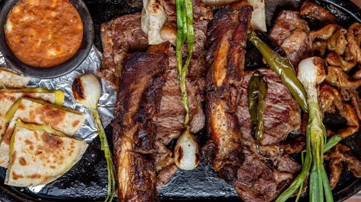

Carne Asada
Carne asada is one of Sonora's best-known culinary traditions. Beef is grilled over high heat and commonly served with flour tortillas, salsa, grilled onions, and other accompaniments. It is especially popular during family gatherings and celebrations.